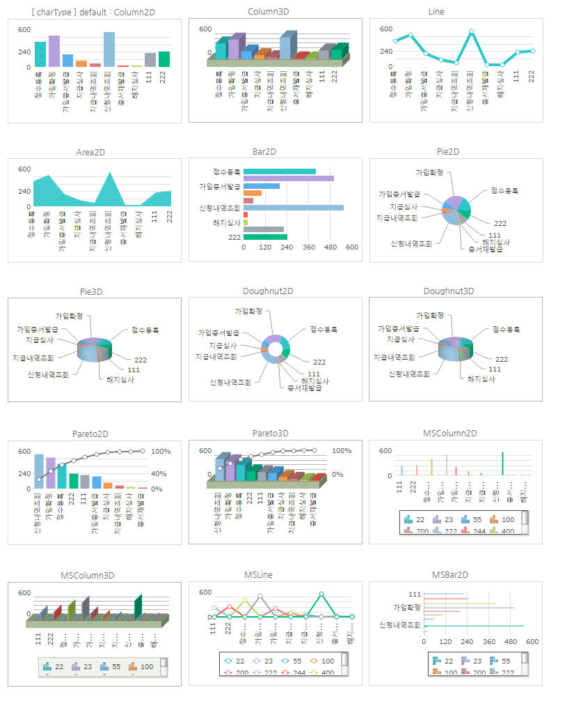
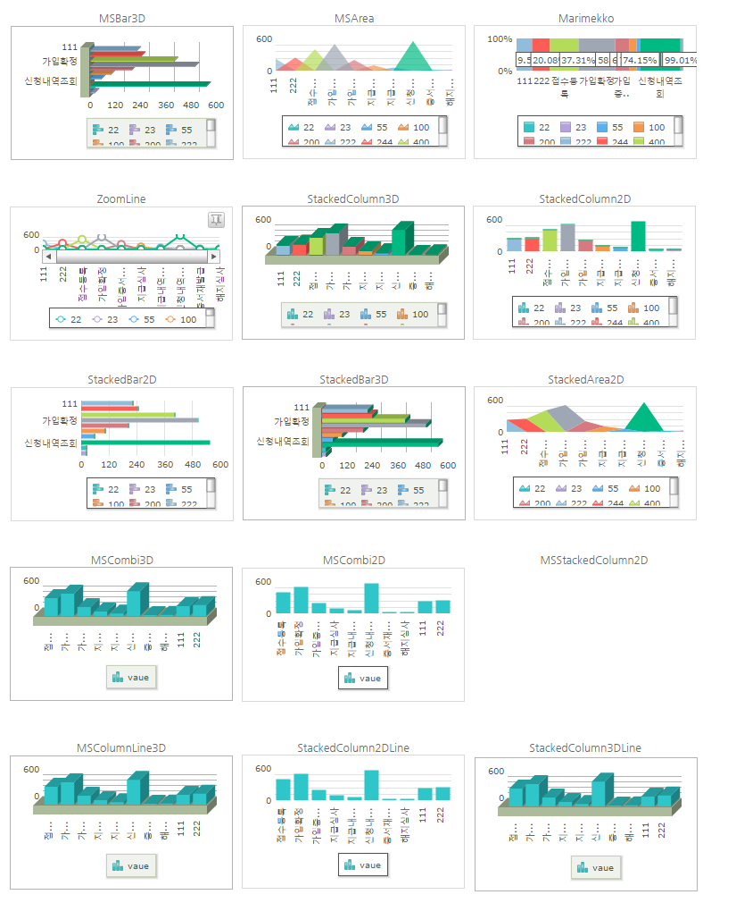
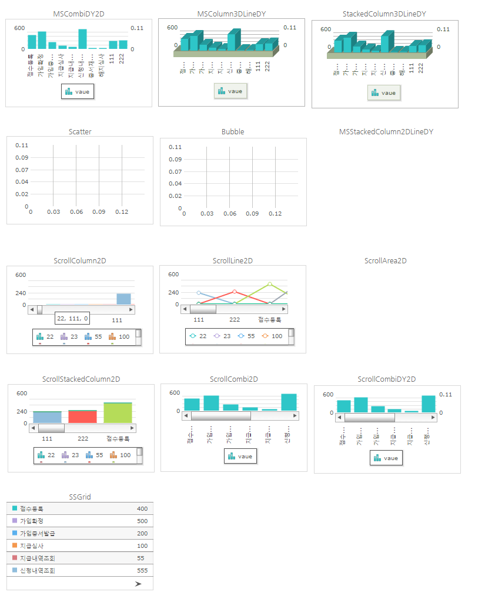
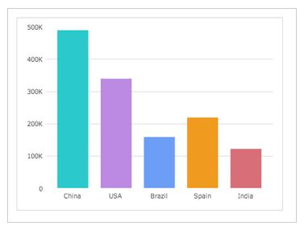

20.FusionChart
수정 일자 버전 (SP2)
WebSquare5 Studio : 20180117_1349_x86_B
WebSquare5 Engine : 5.0_2.2982B.20180223.154326_1.5
FusionChart Wrapper 컴포넌트입니다. FusionCharts의 데이터는 실제 차트에 보여줄 값과 스타일 옵션들이 하나로 결합되어 있는 형태입니다.
WebSquare5에서는 이를 분리하여 차트를 쉽게 Customizing 할 수 있도록 API를 지원합니다.
FusionChart는 다양한 Device, Browser, Platform에서 작동하는 JavaScript chart 입니다.
WebSquare5는 FusionChart의 기능을 사용할 수 있는 환경을 제공합니다.
각 차트에 대한 자세한 Properties & API는 FusionCharts 공식 홈페이지를 참조하시기 바랍니다.http://docs.fusioncharts.com/charts/
20.1Property
Property | Description |
|---|---|
accessibility | FusionChart의 웹접근성 지원 여부 |
actionURI SP2 | exportJSChart API호출시 대상이 되는 URI. [default: engine/servlet/exportFusionChart.jsp] |
| 차트 유형 |
dataList | dataList를 하나더 추가할 수 있는 옵션, 단 첫번째 바인딩된 dataList와 구조가 동일해야되며, seriesType이 simple인 경우에만 적용됨. |
drawType | FusionChart의 렌더 타입 (javascript / flash / mixed 지원) |
id | 컴포넌트 id |
labelNode | FusionChart의 lable 데이터로 사용할 DataCollection의 column의 ID값. 공백 일 경우 DataCollection의 첫 번째 column이 자동 셋팅 됩니다. |
| FusionChart의 dataplot 색상 |
ref | FusionChart와 DataCollection 데이터 연동 시 사용. DataCollection을 설정합니다. seriesType이 advanced 일 경우에는 labelNode, seriesColumns 옵션과 seriesType이 simple 일 경우에는 labelNode, seriesNode, valueNode 옵션과 함께 사용됩니다. |
runflashAt | drawType이 "mixed"일때 IE브라우저 버전을 지정하여 flash로 rendering되는 옵션. |
seriesColumns | seriesType이 advanced 일 경우, FusionChart의 series 데이터로 사용할 DataList column 정보들. 공백 일 경우 첫 column을 제외 한 dataType이 number인 column들이 자동 셋팅 됩니다. |
seriesNode | seriesType이 simple 일 경우, FusionChart의 series 데이터로 사용할 DataCollection의 column의 ID값. 공백 일 경우 DataCollection의 두 번째 column이 자동 셋팅 됩니다. |
seriesType | FusionChart의 DataCollection 데이터 연동 시 설정할 series의 Type. seriesType이 simple은 Single Series Charts, Multi Series Charts 종류만 지원합니다. |
| Fusionchart의 style 속성 |
tabIndex SP2 | Tab Key를 이용 한 컴포넌트의 포커스 순서로 HTML의 tabindex속성과 동일한 기능을 제공한다. |
valueNode | seriesType이 simple 일 경우, FusionChart의 value 데이터로 사용할 DataCollection의 column의 ID값. 공백 일 경우 DataCollection의 dataType이 number인 column이 자동 셋팅 됩니다. |
20.2브라우저 캡쳐화면

[그림 20-1]1

[그림 20-2]2

[그림 20-3]3
FusionChart는 다양한 Device, Browser, Platform에서 작동하는 JavaScript chart 입니다.
WebSquare5는 FusionChart의 기능을 사용할 수 있는 환경을 제공합니다.
20.3지원 브라우저
거의 모든 브라우저를 지원합니다. 단, flash 렌더링 시 flash를 지원하지 않는 브라우저는 지원하지 않습니다.
Internet Explorer 6,7,8,9,10,11
Chrome
Safari
Opera
Firefox
20.4차트의 종류
선형 차트 (line chart)
세로막대차트 (2D/3D Column Chart)
영역차트 (Area Chart)
가로막대차트 (2D/3D Bar Chart)
원형차트 (2D/3D Pie Chart)
도우넛차트(2D/3D Doughnut Chart)
스텍차트 (Stacked Chart)
조합차트(Combination Chart)
스크롤차트(Scroll Chart)
버블차트(Bubble Chart)
xy(Scatter)차트 (xy Chart) SSGrid
20.5지원 데이터
json
xml (FusionChart native API 이용)
20.6주의사항 및 Tip
Fusionchart의 디자인은 css 로 변경하는것이 아니라 차트가 제공하는 옵션에서 정의합니다. 변경방법은 기술지원에서 문의바랍니다.
데이터 연동 방법
DataCollection 만들고 디자인뷰에서 해당컴포넌트의 ref에 연결하거나
FusionChart에 Id, chartType, drawType를 설정하여 차트를 만듭니다.
<w2:fusionchart id="chartTest" style="position: absolute ;left: 480px;top: 150px; width:430px; height: 300px;" chartType="Column2D" drawType="javascript">; <;/w2:fusionchart>;
N/A
데이터를 셋팅 해야 합니다. FusionChart는 xml과 json 형태의 데이터를 지원하며, WebSquare5에서는 json 데이터를 지원합니다.
setJSONData() API를 이용하여 데이터를 셋팅합니다.
var jsonData = { "data": [ { "value": "490000", "label": "China" }, { "value": "340000", "label": "USA" }, { "value": "160000", "label": "Brazil" }, { "value": "220000", "label": "Spain" }, { "value": "123000", "label": "India" }] }; //차트에 데이터를 셋팅합니다. chartTest.setJSONData(jsonData);
N/A
아래와 같이 차트가 그려집니다.(WebSquare5 기본 스타일 적용된상태)
